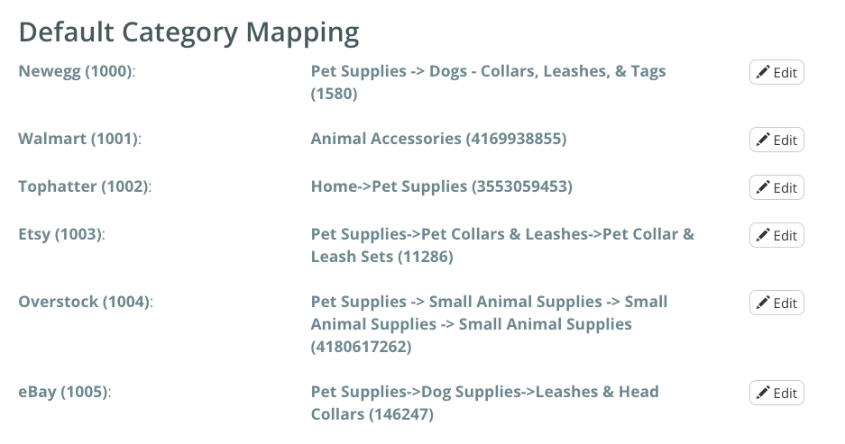
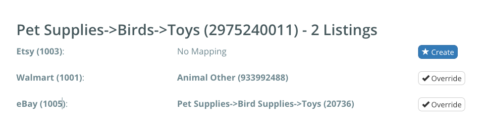

We utilize Amazon categories to assign categories to non-Amazon marketplaces, benefiting from Amazon's extensive category selection. This process remains effective even if you do not possess an Amazon account. When a listing is imported or created, our system diligently maps the category to an appropriate Amazon category. Consequently, you can effortlessly create listings on other marketplaces without the need to manually select a category specific to the new marketplace. The flexibility to modify these mappings as required is available to you on the Category Mapping page.
To get started, click Listings on the menu bar and choose your preferred region under Category Mapping.
These will apply to new listings. No existing listings will be changed or overwritten.
If there is a specific category you prefer for your listings, you have the option to decide a default category for each marketplace. This means that any listings that do not have a specific mapping will automatically be assigned to this category.
If you wish to modify the mapping we have established, you have the freedom to decide from all the available category options on Amazon. Click Override and select the category that best suits your needs.
After you've wrapped up your category mapping, you can move on to posting your listings. Continued learning
Confused? Require your categories assigned in bulk? Contact support!